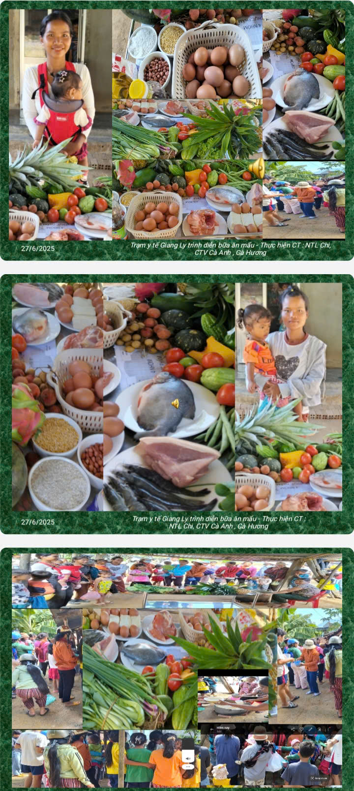

🌿 Ý nghĩa của Tuần lễ Dinh dưỡng
Dinh dưỡng hợp lý là nền tảng quan trọng để nâng cao sức khỏe, cải thiện chất lượng cuộc sống và góp phần phát triển toàn diện thể chất, trí tuệ của mỗi người.
Hưởng ứng Tuần lễ “Dinh dưỡng và Phát triển” năm 2026, mỗi người dân, mỗi gia đình hãy cùng xây dựng thói quen ăn uống lành mạnh, lựa chọn thực phẩm an toàn và sử dụng thực phẩm hợp lý, tiết kiệm.
🥗 Ăn uống hợp lý – Sống khỏe mỗi ngày
- Ăn đa dạng các loại thực phẩm, bảo đảm cân đối dinh dưỡng.
- Tăng cường rau xanh và trái cây tươi.
- Hạn chế thực phẩm chứa nhiều muối, đường và chất béo không có lợi.
- Lựa chọn thực phẩm tươi, sạch, có nguồn gốc rõ ràng.
- Kết hợp chế độ ăn lành mạnh với hoạt động thể lực phù hợp.
- Duy trì vận động thể lực phù hợp với lứa tuổi và tình trạng sức khỏe.
- Quan tâm theo dõi cân nặng, chiều cao và tình trạng dinh dưỡng định kỳ.

👩👧 Chăm sóc dinh dưỡng bà mẹ và trẻ em
Phụ nữ mang thai, bà mẹ đang nuôi con nhỏ và trẻ em cần được quan tâm đặc biệt về dinh dưỡng.


- Phụ nữ mang thai cần ăn đa dạng, đủ chất và khám thai định kỳ.
- Khuyến khích nuôi con bằng sữa mẹ theo khuyến cáo của ngành y tế.
- Trẻ từ 6 tháng tuổi cần được ăn bổ sung phù hợp với độ tuổi.
- Theo dõi cân nặng, chiều cao để phát hiện sớm nguy cơ suy dinh dưỡng.
- Đưa trẻ đến cơ sở y tế khi cần tư vấn về dinh dưỡng và tăng trưởng.
🍎 Bảo đảm an toàn thực phẩm
- Rửa tay bằng xà phòng trước khi chế biến thức ăn và trước khi ăn.
- Ăn chín, uống chín; sử dụng nước sạch.
- Tách riêng thực phẩm sống và thực phẩm đã nấu chín.
- Bảo quản thực phẩm đúng cách.
- Không sử dụng thực phẩm ôi thiu, nấm mốc hoặc không rõ nguồn gốc.